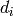
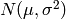

Contains simple interfaces for the Bayes optimization class.
Each interface must have the getState and setX methods as used below.
Contains the Bayes optimization class. Initialization parameters:
model: an object with methods ‘predict’, ‘fit’, and ‘update’ interface: an object which supplies the state of the system and
allows for changing the system’s x-value. Should have methods ‘(x,y) = intfc.getState()’ and ‘intfc.setX(x_new)’. Note that this interface system is rough, and used for testing and
as a placeholder for the machine interface.
- acq_func: specifies how the optimizer should choose its next point.
‘EI’: uses expected improvement. The interface should supply y-values. ‘testEI’: uses EI over a finite set of points. This set must be
provided as alt_param, and the interface need not supply meaningful y-values.xi: exploration parameter suggested in some Bayesian opt. literature alt_param: currently only used when acq_func==’testEI’ m: the maximum size of model; can be ignored unless passing an untrained
SPGP or other model which doesn’t already know its own size
- bounds: a tuple of (min,max) tuples specifying search bounds for each
- input dimension. Generally leads to better performance.
- prior_data: input data to train the model on initially. For convenience,
since the model can be trained externally as well. Assumed to be a pandas DataFrame of shape (n, dim+1) where the last
column contains y-values.
For ‘testEI’, returns the index of the point instead. For normal acquisition, currently uses the bounded L-BFGS optimizer.
Haven’t tested alternatives much.
Contains the Bayes optimization class. Initialization parameters:
model: an object with methods ‘predict’, ‘fit’, and ‘update’ interface: an object which supplies the state of the system and
allows for changing the system’s x-value. Should have methods ‘(x,y) = intfc.getState()’ and ‘intfc.setX(x_new)’. Note that this interface system is rough, and used for testing and
as a placeholder for the machine interface.
- acq_func: specifies how the optimizer should choose its next point.
‘EI’: uses expected improvement. The interface should supply y-values. ‘testEI’: uses EI over a finite set of points. This set must be
provided as alt_param, and the interface need not supply meaningful y-values.xi: exploration parameter suggested in some Bayesian opt. literature alt_param: currently only used when acq_func==’testEI’ m: the maximum size of model; can be ignored unless passing an untrained
SPGP or other model which doesn’t already know its own size
- bounds: a tuple of (min,max) tuples specifying search bounds for each
- input dimension. Generally leads to better performance. Has a different interpretation when iter_bounds is True.
- iter_bounds: if True, bounds the distance that can be moved in a single
- iteration in terms of the length scale in each dimension. Uses the bounds variable as a multiple of the length scales, so bounds==2 with iter_bounds==True limits movement per iteration to two length scales in each dimension. Generally a good idea for safety, etc.
- prior_data: input data to train the model on initially. For convenience,
since the model can be trained externally as well. Assumed to be a pandas DataFrame of shape (n, dim+1) where the last
column contains y-values.
For ‘testEI’, returns the index of the point instead. For normal acquisition, currently uses the bounded L-BFGS optimizer.
Haven’t tested alternatives much.
Bases: object
Computes the next point for the optimizer to try by maximizing the acquisition function. If movement per iteration is bounded, starts search at current position.
Checks the observed points to see which is predicted to be best. Probably safer than just returning the maximum observed, since the model has noise. It takes longer this way, though; you could instead take the model’s prediction at the x-value that has done best if this needs to be faster.
The common acquisition function, expected improvement. Returns the negative for the minimizer (so that EI is maximized). Alpha attempts to control the ratio of exploration to exploitation, but seems to not work well in practice. The terminate() method is a better choice.
The probability of improvement acquisition function. Untested. Performs worse than EI according to the literature.
The upper confidence bound acquisition function. Currently only partially implemented. The mult parameter specifies how wide the confidence bound should be, and there currently is no way to compute this parameter. This acquisition function shouldn’t be used until there is a proper mult.
Created on Wed Nov 18 19:46:52 2015
@author: Mitch
Trains a sparse Gaussian process on the input data. X – DataFrame with training data (n x dim) Y – Labels for training data (n x 1) num_pseudo_inputs – number of points used to fill sparse model num_starts – number of attempts at minimization. Increases runtime linearly.
Returns: xb – pseudo-inputs as ndarray (m x dim) hyperparams – tuple containing GP parameters
Translated to python from Edward Snelson’s matlab code by Mitchell McIntire.
Created on Mon Jan 25 21:04:59 2016
@author: Mitch
Designed by Lehel Csato for NETLAB, rewritten for Python in 2016 by Mitchell McIntire
The Online Gaussian process class.
dim: the dimension of input data hyperparams: GP model hyperparameters. For RBF_ARD, a 3-tuple with entries:
hyp_ARD: size (1 x dim) vector of ARD parameters hyp_coeff: the coefficient parameter of the RBF kernel hyp_noise: the model noise hyperparameter Note – different hyperparams needed for different covariance functions
prmean: either None, a number, or a callable function that gives the prior mean prmeanp: parameters to the prmean function proj: I’m not sure exactly. Setting this to false gives a different method
of computing updates, but I haven’t tested it or figured out what the difference is.
update(x_new, y_new): Runs an online GP iteration incorporating the new data. fit(X, Y): Calls update on multiple points for convenience. X is assumed to
be a pandas DataFrame.
predict(x): Computes GP prediction(s) for input point(s). scoreBVs(): Returns a vector with the (either weighted or unweighted) KL
divergence-cost of removing each BV.
Created on Mon Jan 25 16:19:03 2016
@author: Mitch
Script to show optimization results on toy problem.
Currently more sensitive to initial conditions than expected. Also currently uses hyperparameters that are clearly suboptimal - results are inconsistent based on initial sampling and whether bounds are given for acquisition.
Probably could find a better toy problem that is nonnegative, which might imporove consistency.
Random values in a given shape.
Create an array of the given shape and propagate it with random samples from a uniform distribution over [0, 1).
random
This is a convenience function. If you want an interface that takes a shape-tuple as the first argument, refer to np.random.random_sample .
>>> np.random.rand(3,2)
array([[ 0.14022471, 0.96360618], #random
[ 0.37601032, 0.25528411], #random
[ 0.49313049, 0.94909878]]) #random
Created on Wed Jan 27 21:19:02 2016
@author: Mitch
Imports LCLS data and does trial optimization with unweighted and weighted online GPs.
Return a sample (or samples) from the “standard normal” distribution.
If positive, int_like or int-convertible arguments are provided, randn generates an array of shape (d0, d1, ..., dn), filled with random floats sampled from a univariate “normal” (Gaussian) distribution of mean 0 and variance 1 (if any of the  are floats, they are first converted to integers by truncation). A single float randomly sampled from the distribution is returned if no argument is provided.
This is a convenience function. If you want an interface that takes a tuple as the first argument, use numpy.random.standard_normal instead.
random.standard_normal : Similar, but takes a tuple as its argument.
For random samples from , use:
sigma * np.random.randn(...) + mu
>>> np.random.randn()
2.1923875335537315 #random
Two-by-four array of samples from N(3, 6.25):
>>> 2.5 * np.random.randn(2, 4) + 3
array([[-4.49401501, 4.00950034, -1.81814867, 7.29718677], #random
[ 0.39924804, 4.68456316, 4.99394529, 4.84057254]]) #random
minimize.py
This module contains a function ‘minimize’ that performs unconstrained gradient based optimization using nonlinear conjugate gradients.
The function is a straightforward Python-translation of Carl Rasmussen’s Matlab-function minimize.m